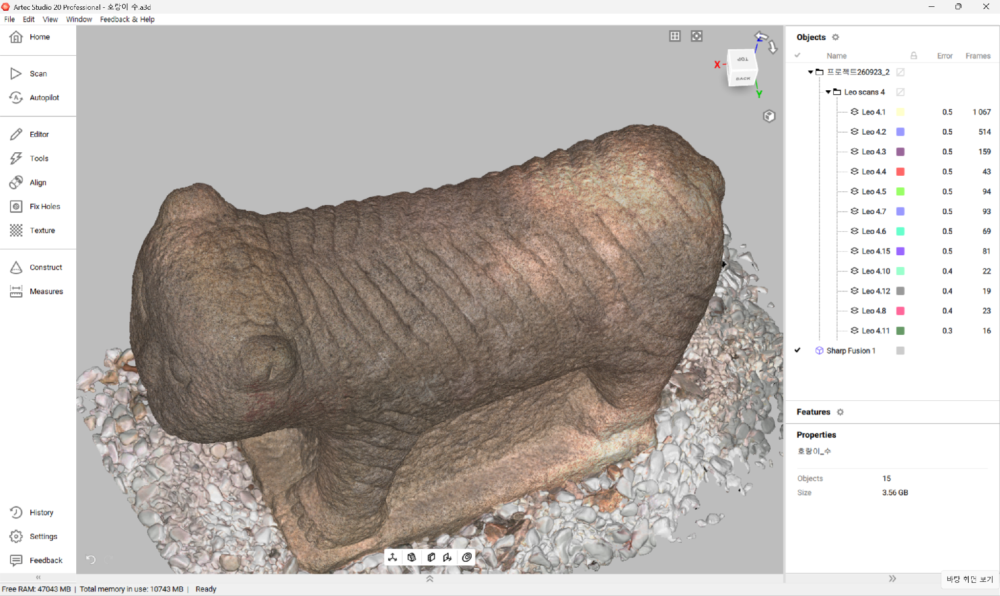

Index · 01
3D 스캔·Artec
두 석사자의 형태와 표면을 휴대용 3D 스캐너로 기록하고, Artec Studio에서 각각의 3D 모델로 정리했습니다.
여러 방향의 기록을 하나의 모델로

01 표면 기록
석사자 주변을 이동하며 여러 각도에서 형태와 표면색을 스캔했습니다.
02 정렬과 통합
Artec Studio에서 겹치는 부위를 맞추고, 여러 스캔을 하나의 모델로 합쳤습니다.
03 데이터 확인
모델을 돌려 보며 문양과 표면을 확인하고, 함께 찍힌 지면과 비어 있는 부분을 살폈습니다.
표면색을 끄자 드러난 조각
스캔 데이터의 표면색을 끄자, 육안으로 구별하기 어려웠던 조각선과 얼굴의 윤곽이 드러났습니다. 컬러와 무채색을 번갈아 보며 돌의 얼룩과 조각의 굴곡을 구분했습니다.
발견에서 가치 해석으로
선명해진 조각선을 비교하며 두 석사자의 갈기와 수염, 등무늬가 어떻게 다른지 살폈습니다. 굽은 선과 둥근 형태에서 길과 산을 떠올렸고, 이를 계기로 공주목의 지형과 석사자가 놓였던 객사터에 관한 기록을 조사했습니다.